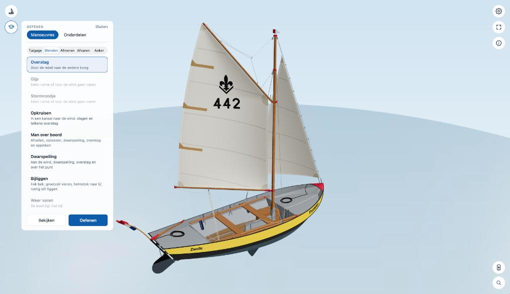
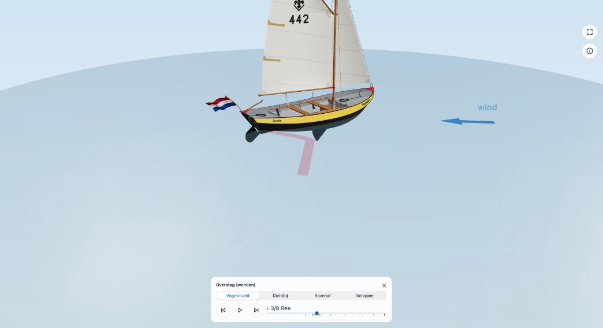
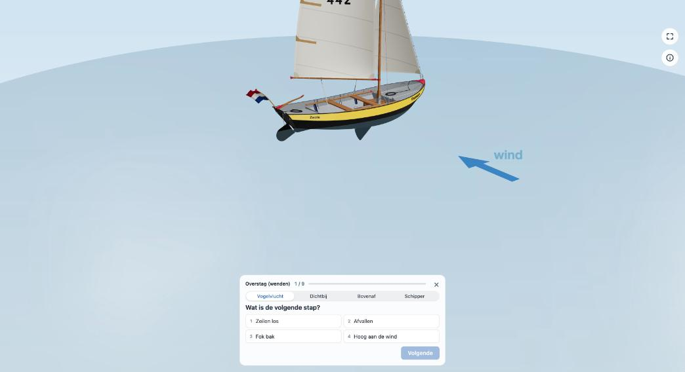

Manoeuvres
Alle manoeuvres uit de lesstof: ze afspelen en bekijken, of ze stap voor stap zelf oefenen.
Een manoeuvre kiezen


Open Oefenen (de studentenmuts) en kies Manoeuvres. Ze staan in groepen:
- Tuigage: mast zetten en strijken, zeilen aanslaan, hijsen, reven, strijken en afslaan, zeil- en nachtklaar maken.
- Wenden: overstag, gijp, stormrondje, opkruisen, man over boord, dwarspeiling, bijliggen en weer varen.
- Afmeren: sliplanding en opschieter aan hogerwal, sliplanding en voor top en takel aan een langswal, aanleggen aan lagerwal, verhalen.
- Afvaren: van hogerwal, langswal en lagerwal, en kop in de wind leggen.
- Anker: ankeren en anker op, met en zonder zeilen.
- In de modus roeien: Roeien, met achtje, afvaren, drie manieren van aanleggen, man overboord, ankeren en anker op.
Kan een manoeuvre nu niet, dan is hij grijs en staat eronder waarom, bijvoorbeeld Eerst ruime of voor de wind gaan varen. Een vinkje betekent dat je hem al eens foutloos hebt geoefend.
Bekijken


Met Bekijken speelt de manoeuvre vanzelf af. De commando's staan in tekstballonnen en het spoor van de boot wordt op het water getekend. In de kaart onderin:
- Vanwaar je kijkt: Vogelvlucht, Dichtbij (bij de onderdelen van elke stap), Bovenaf (de wind komt van boven) of Schipper (vanaf het roer).
- De stappenbalk: vorige stap, afspelen of pauzeren, volgende stap, en een schuif over de hele manoeuvre. De naam van de stap staat erbij.
- Het kruisje: stopt de manoeuvre en zet de boot terug waar hij begon. Aan het eind staat er Klaar.
Oefenen


Met Oefenen blijft de boot staan en is de vraag bij elke stap: Wat is de volgende stap? Kies een van de vier antwoorden (of druk op 1 tot 4) en ga verder met Volgende (Enter). Een goed antwoord speelt de stap af; bij een fout zie je wat het wel had moeten zijn. Aan het eind zie je hoeveel stappen je goed had.
Kies je een andere modus terwijl een manoeuvre bezig is, dan stopt hij, net als met het kruisje.
Alle stappen op een rij
Voor elke manoeuvre staan de voorwaarden en de stappen, met waar ze vandaan komen, in het overzicht van de manoeuvres. Klopt er iets niet met hoe jullie het leren? Laat het weten via Melden.